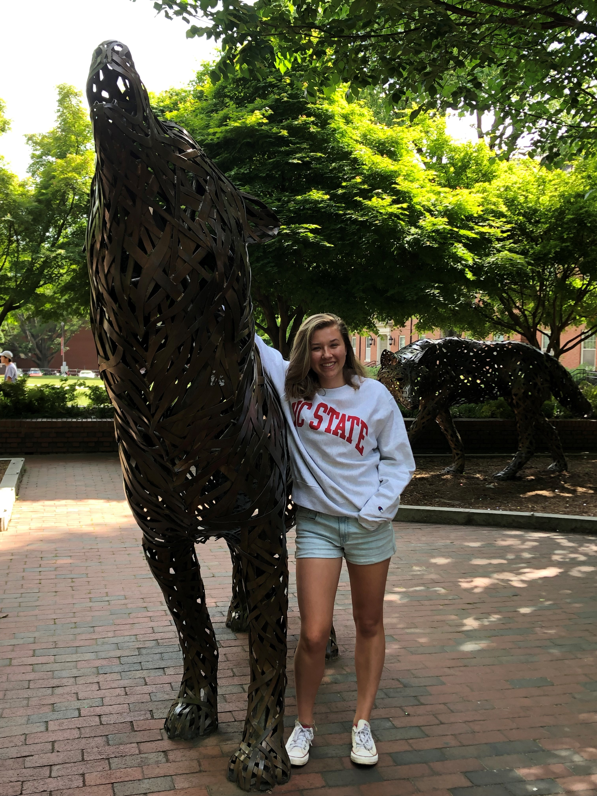
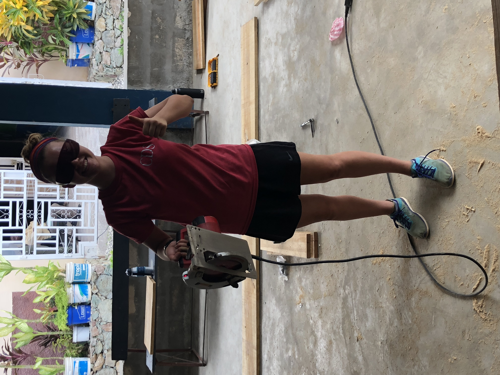
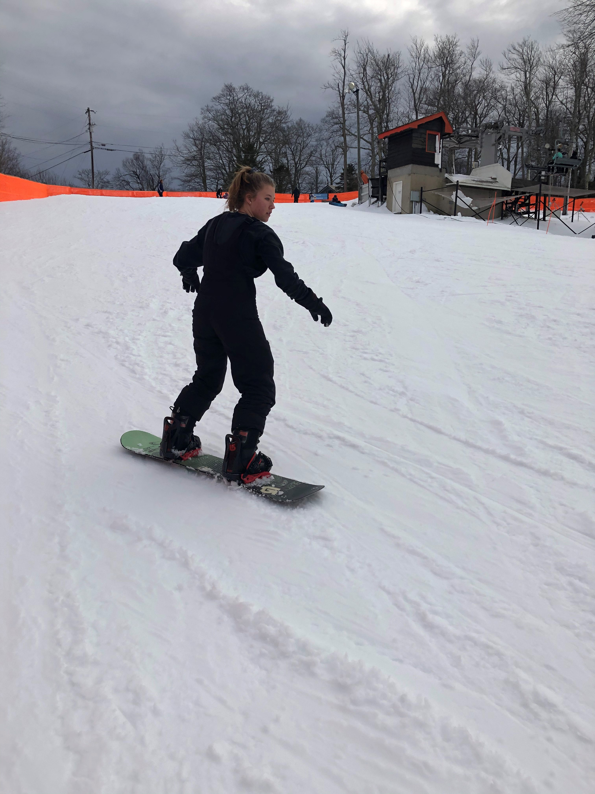

Learn more about my background, interests, and experience below! Scroll down to the bottom to see my resume, or click here to download it.
About Me
My Background
I'm currently a student at NC State, where I begin in engineering. Although I still love the problem-solving engineering approach, I have since switched to statistics because I want to solve real-world problems through data analysis. The increasing presence of big data can either be a huge pain or a huge opportunity ...and I intend to help you transform the former into the latter! I'm passionate about helping both data-literate and non-data-literate people perform data-informed decisions.
During my time at State, I've gained a solid statistical foundation that informs the lens through which I process and analyze data, supplemented by experience with statistical applications of coding languages, including Python, R, Java, and SAS.
 I've gained experience ... blah blah blah blah blah blah blah blah blah blah blah blah blah blah blah blah blah blah blah blah blah blah blah blah blah blah blah blah blah blah blah blah blah blah blah blah blah blah blah blah blah blah blah blah blah blah blah blah ...
Discuss roles of leadership/odd jobs
In high school, I began tutoring my friends when they needed help with classes; I noticed that I consistently sought for my peers to actually understand the material instead of simply writing the correct answer. This propelled me to become a math tutor in college and thus recognize my enthusiasm for teaching, which in my career translates to a desire to help both data-literate and non-data-literate audiences understand data analysis.
My Interests
One of my favorite parts of NC State is its diversity of clubs and organizations, a few of which I've come to be passionate about!
Antioch has served as more than just an organization for me, but rather a family into which I was accepted with open arms. As a nervous freshman in need of a supportive community, encountering Antioch was transformative. It's now my delight to carry forward that legacy as I get to welcome new people into Antioch, which accepts them as they are while loving them enough to encourage growth.
My mother is a first-generation American whose parents are from Germany. As such, German culture and traditions (and a few words here and there) are integrated into my childhood, so learning German (and hopefully visiting Germany if covid-19 allows) is motivated by better understanding my family culture and especially my grandparents. Deutschklub at NC State has provided an experiental learning environment to supplement my classroom German education, along with Kaffeeklatsch (translation: coffee gossip) every week.
I was first introduced to shag and swing dance through The Raleigh Shag Club hosted at TJ's, and the result has been a love for swing dance that has infected my friends to the point where we've coordinated swing dance events together!
Resume
About Me
About Me
My Background
I'm currently a student at NC State, where I begin in engineering. Although I still love the problem-solving engineering approach, I have since switched to statistics because I want to solve real-world problems through data analysis. The increasing presence of big data can either be a huge pain or a huge opportunity ...and I intend to help you transform the former into the latter! I'm passionate about helping both data-literate and non-data-literate people perform data-informed decisions.
My Experience
Nunc lacinia ante nunc ac lobortis. Interdum adipiscing gravida odio porttitor sem non mi integer non faucibus ornare mi ut ante amet placerat aliquet. Volutpat eu sed ante lacinia sapien lorem accumsan varius montes viverra nibh in adipiscing blandit.
My Interests
Nunc lacinia ante nunc ac lobortis. Interdum adipiscing gravida odio porttitor sem non mi integer non faucibus ornare mi ut ante amet placerat aliquet. Volutpat eu sed ante lacinia sapien lorem accumsan varius montes viverra nibh in adipiscing blandit.